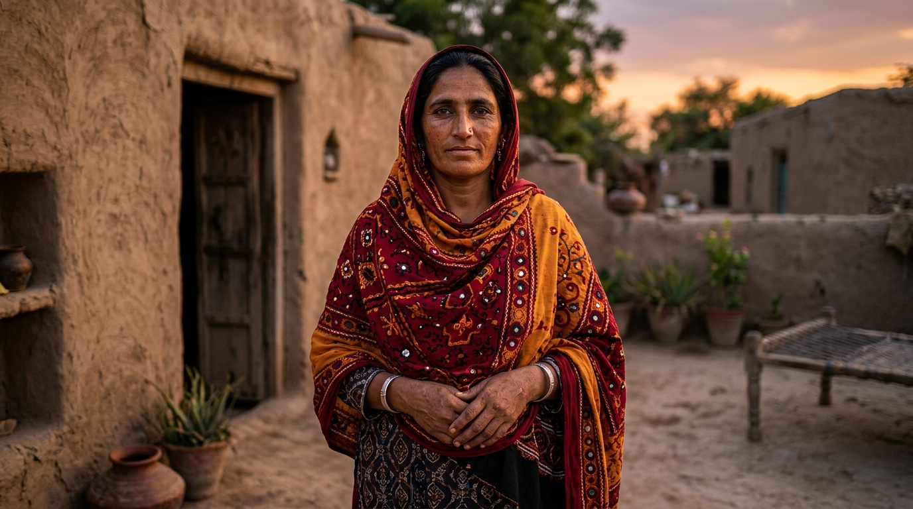
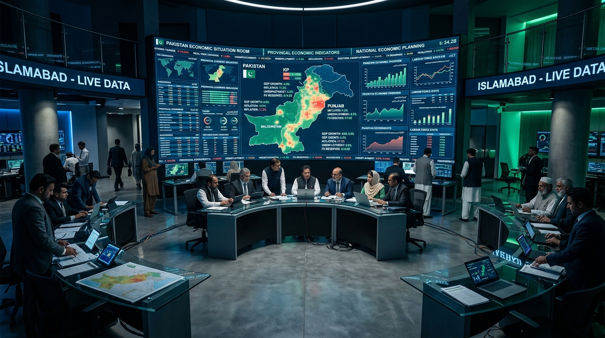
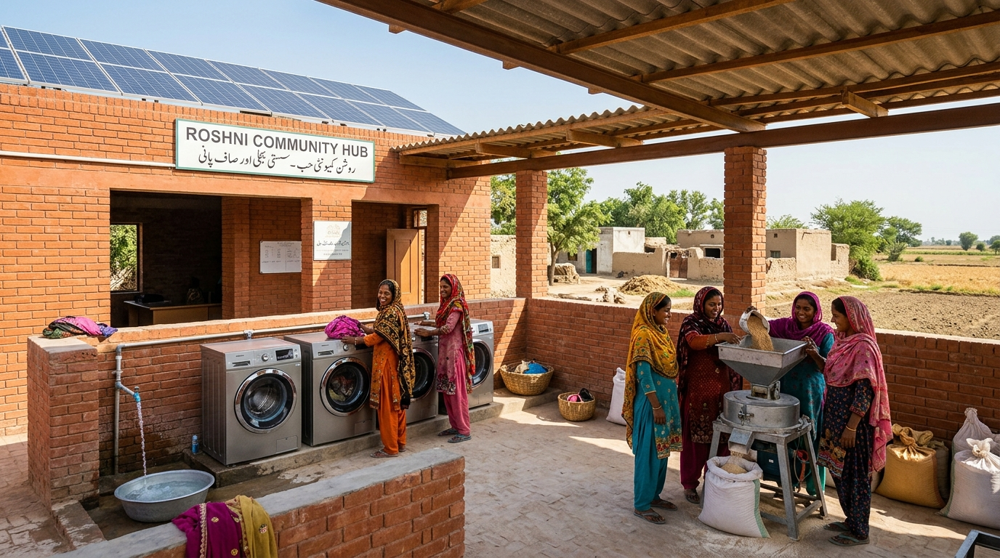
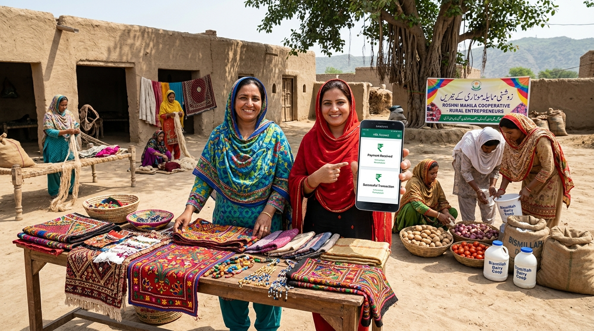

The Arrival: 15 Minutes Before Midnight
A sole economic advisor stands at the red laser checkpoint. Through the drizzle and cold mist, the distant neoclassical facade of the Prime Minister's House slowly powers on its security spotlights.
The Gates Swing Open
Security barriers lift. The executive escort guides the delegation up the rain-soaked drive. The Prime Minister has summoned an emergency economic war council.
Stepping into the War Room
The heavy mahogany double doors open. The room falls silent. Around the grand conference table, the nation's key decision-makers take their seats.
Mian Muhammad Shehbaz Sharif
Prime Minister of Pakistan- Executive Veto & Presidential / PM Directive Authority
- National Assembly Coalition Management
- Political Leverage over Provincial Allocations
"I need 5% GDP growth to keep this country solvent. PBS tells me women do PKR 10.38 Trillion in unpaid care, but my finance team says it has zero fiscal value. Who is right?"
Muhammad Aurangzeb
Federal Minister for Finance & Revenue- IMF Extended Fund Facility Primary Balance Enforcement
- Sovereign Debt Servicing & Treasury Liquidity
- Cabinet Budget Veto on Unfunded Mandates
"We have zero fiscal space. Every single rupee of borrowing is scrutinized by the IMF. If this care infrastructure doesn't pay back in under 6 months, I cannot approve it."
Dr. Fareeha Armughan
Senior Development Economist (Harvard PhD | SDPI × UN Women)- BISP NSER Censal Microdata Architecture (N = 254,648)
- UN SNA 2008 Household Care Satellite Accounts
- Labor Conversion Elasticity Modeling (α = 0.35 Duflo Standard)
"Minister, community laundry and electric chakki hubs pay back capital in exactly 2.83 months. We are ignoring a PKR 3.02 Trillion annual deadweight loss."

Bakhtawar Bibi
Rural Mother & Household Head (Sindh / Balochistan Cluster)- 14.5 Hours Daily Unpaid Domestic Physical Chores
- Spends 4.3h/wk fetching water & 7.4h/wk foraging wood
- 69.8% Stated Aspiration: Desperately wants to work and earn
"Mujhe khairat nahi chahiye. Mujhe pani aur chakki ka waqt bacha kar dein, taake mein apne haathon se izzat ki roti kama sakoon."
Chief Economic Advisor
Presenter & Scribe (Hall Delegation Lead)- Log the Group's Consensus (Unanimous vs Majority)
- Guide the Prime Minister through 4 Harvard Case Dilemmas
- Balance Personal Moral Standing vs Administration Success
The Prime Minister looks up from his briefing paper. "Advisor, you have the floor. Read Scenario 1 to the room."

Scenario 1: The Care Satellite & Infrastructure Act
Take a few minutes to individually read the scenario before coming together to discuss.
One month ago, the Pakistan Bureau of Statistics published the landmark 37th Labour Force Survey (LFS 2024–25). Chapter 12 reveals that 66.7 Million women perform 15.3 hours a week of unpaid domestic care, valued at PKR 10.38 Trillion (9.8% of GDP) under the statutory minimum wage (PKR 195.67/hr).
In response, a bipartisan coalition in the National Assembly has introduced the TransformCare Pakistan Infrastructure Act. The bill mandates the creation of an official UN SNA 2008 Household Care Satellite Account and directs PKR 26.8 Billion into village solar washing and electric chakki hubs for BISP housewives. The Finance Ministry strongly opposes it, fearing IMF primary balance sanctions, but civil society and rural MPAs passionately support it.
You must advise the Prime Minister on whether to endorse and sign the bill into law.
• Failure: The IMF flags non-compliance with primary deficit benchmarks; short-term fiscal friction occurs.
If you advise the Prime Minister to veto the bill: • Success: Preserves orthodox IMF program compliance and avoids budget disputes.
• Failure: 8.94 Million housewives remain trapped in 14-hour physical chores; PKR 3.02 Trillion in foregone output is lost annually.
| National Economy | Fiscal Discipline | Party Harmony | Public Standing | Implementation Capacity |
|---|---|---|---|---|
| 2 (Weak) | 2 (Weak) | 3 (Moderate) | 4 (Strong) | 4 (Strong) |
Scenario 2: The IMF Primary Deficit Ultimatum
COMPLY SCENARIO: The Prime Minister has already decided on a course of action.
During an emergency late-night session with the IMF resident mission in Islamabad, the IMF warns that the primary budget deficit cannot increase by even 0.1% of GDP. In response, Prime Minister Shehbaz Sharif announces a radical executive solution:
"We will not cancel care infrastructure, nor will we violate the deficit ceiling. I am reallocating 3% of distortionary, untargeted fossil fuel subsidies directly into self-financing revolving village care funds. The capital pays back in 2.83 months and generates local tax revenues. I need every advisor in this room to publicly defend this reallocation tomorrow."
This is a compliance scenario. The Prime Minister is not asking for your recommendation—he is asking for your loyalty and compliance. Some members of your group worry that powerful industrial lobbies will retaliate.

Scenario 3: The Rural Infrastructure Architecture
ADVISE SCENARIO: Target 8.94 Million BISP Housewives across Pakistan.
Microdata from 254,648 BISP women shows 74.5% are full-time domestic housewives, and 69.8% (6.19 Million) want to earn income. Dr. Fareeha Armughan presents three capital infrastructure models evaluated at the statutory wage anchor (PKR 195.67/hr) with conversion elasticity α = 0.35:

TransformCare Pakistan 2026–2035 Accord Enacted
The Prime Minister has enacted your group's policy framework into national law. By moving from unpaid care traps to targeted community infrastructure, Pakistan has triggered the largest female economic surge in South Asian history.
| Scenario 1 (Advise) | Scenario 2 (Comply) | Scenario 3 (Advise) | Final Standing with Prime Minister |
|---|---|---|---|
| ✓ SUCCESS | ✓ LOYAL COMPLY | ✓ 4.24× BCR | HIGH STANDING (PM Enacts Priority) |